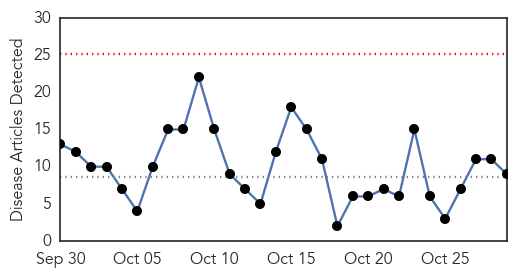
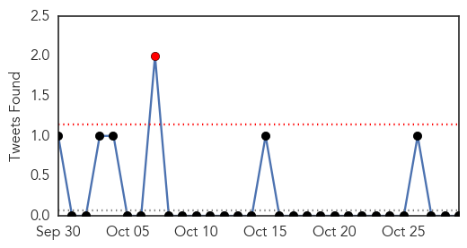
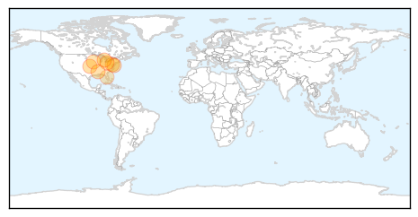

30 Day Trends
Web: 0 alerts, 0 warnings
Twitter: 1 alerts, 0 warnings
Top Articles:
- 0.999
- Vaccines to fight flu will be late getting here
- 0.999
- Local hospitals unite to remind people to get their flu shot! - Cleveland 19 News
- 0.995
- Focus on Flu campaign: Hospitals, health officials urge residents to get shots
- 0.995
- “The flu can kill:” Milwaukee Health Department hosts FREE flu vaccine clinic for children
- 0.983
- Milwaukee Health Department offers free flu vaccinations Thursday
- 0.967
- Flu vaccine delays cause waiting lists in Kalamazoo County
- 0.947
- Flu shots now available at public health district
- 0.915
- Some clinics seeing delay in getting flu vaccine
- 0.795
- Florida Department of Health in Pinellas County offering free flu vaccine shots on Wednesday - Story
Top Tweets:
-
No tweets found for Oct 29, 2014
Web/News Articles
Tweets
Article Locations
Article Confidences